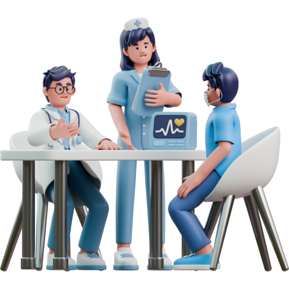

Layanan Poli yang Tersedia

Poli Umum
Melayani pemeriksaan kesehatan dasar untuk semua pasien. Menangani penyakit ringan sedang, memberikan obat, serta rujukan bila perlu.
Layanan Utama:
Konsultasi kesehatan dan diagnosis penyakit umum.
Penanganan demam, flu, batuk, dan infeksi ringan lainnya.
Pemeriksaan tekanan darah dan gula darah.
Pemberian resep obat sesuai diagnosis.
Surat keterangan sehat dan rujukan medis.

Poli Gigi dan Mulut
Melayani pemeriksaan dan perawatan untuk menjaga kesehatan gigi dan mulut.
Layanan Utama:
Pemeriksaan dan konsultasi gigi
Pembersihan karang gigi (Scaling)
Penambalan gigi
Pencabutan gigi
Penyuluhan kesehatan gigi
Poli Keluarga Berencana
Membantu keluarga dalam merencanakan kehamilan yang sehat serta mengatur jarak kelahiran untuk meningkatkan kualitas kesehatan ibu dan anak.
Layanan Utama:
Konsultasi perencanaan kehamilan.
Layanan untuk menunda atau menjarangkan kelahiran.
Peningkatan kualitas kesehatan ibu dan anak.
Poli Lansia
Menyediakan layanan kesehatan yang dikhususkan bagi pasien lanjut usia, berfokus pada pemeriksaan rutin dan pengelolaan penyakit kronis.
Layanan Utama:
Pemeriksaan kesehatan rutin untuk lansia.
Pemantauan penyakit kronis seperti hipertensi dan diabetes.
Pemberian obat sesuai kebutuhan.
Edukasi mengenai gaya hidup sehat untuk lansia.
Poli Gizi
Memberi pelayanan yang berfokus pada asuhan gizi terstandar yang berkelanjutan, mulai dari pengkajian hingga evaluasi.
Layanan Utama:
Konsultasi gizi
Edukasi gizi
Terapi nutrisi
Poli Kandungan Ibu dan Anak (KIA)
Melayani pemeriksaan kesehatan yang berfokus pada ibu dan anak, mulai dari masa kehamilan hingga tumbuh kembang anak prasekolah.
Layanan Utama:
Pemeriksaan Kehamilan (ANC)
Pemeriksaan Nifas
Pemeriksaan Anak
Pemeriksaan skrining untuk deteksi dini kanker serviks (Tes IVA).
Imunisasi